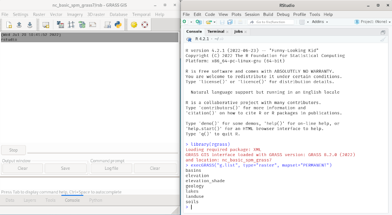
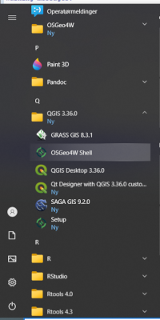
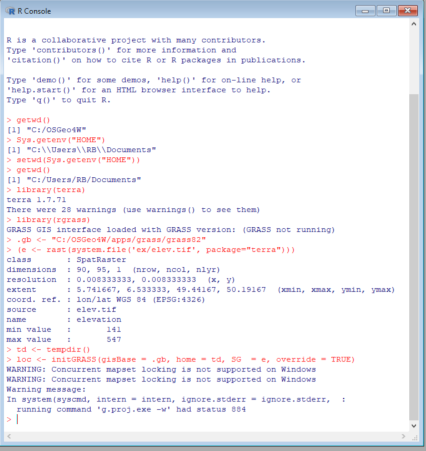
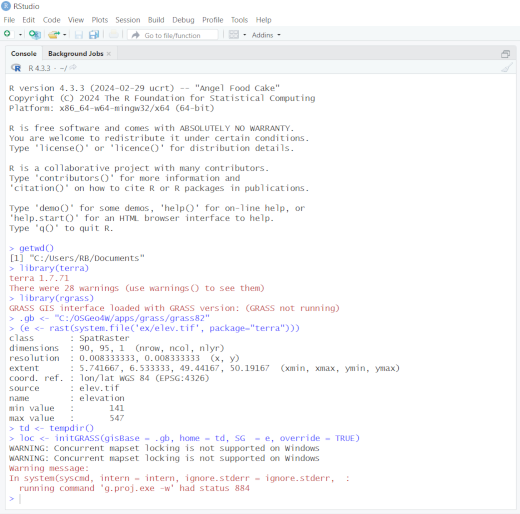
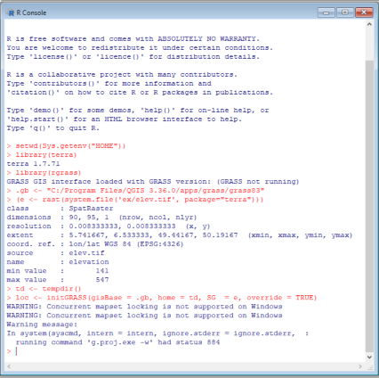
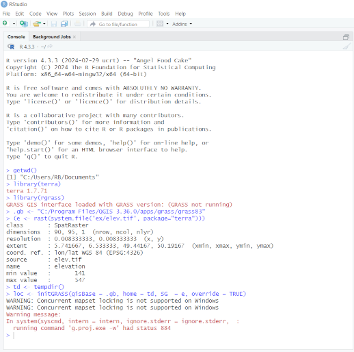

Introduction
The original R-GRASS interface (Bivand 2000;
Neteler and Mitasova 2008) was written mainly to permit R objects
represented as sp class objects to be moved to GRASS,
and GRASS objects to be moved to R for statistical analysis. From
spgrass6 0.6-3 (April 2009) following a fruitful
workshop at Queen’s University, Belfast, the interface was re-written to
use the --interface-description flag provided for each
GRASS command, also used by the Python interface to GRASS commands.
Command interface descriptions are parsed from XML and cached as R
objects for efficiency. The current version of the R-GRASS interface is
contained in this package, rgrass. In addition, an R
function initGRASS() was written to permit GRASS to be
started from within GRASS to which we will return below.
Starting R inside GRASS
When starting GRASS GIS from a terminal console (here GRASS 8.3.2), one can continue in the GRASS terminal console, starting an interactive R session from there (here R 4.3.3). Loading and attaching the R-GRASS interface package rgrass in the R session, we see that the current GRASS location is detected and reported:
$ grass
Starting GRASS GIS...
__________ ___ __________ _______________
/ ____/ __ \/ | / ___/ ___/ / ____/ _/ ___/
/ / __/ /_/ / /| | \__ \\_ \ / / __ / / \__ \
/ /_/ / _, _/ ___ |___/ /__/ / / /_/ // / ___/ /
\____/_/ |_/_/ |_/____/____/ \____/___//____/
Welcome to GRASS GIS 8.3.2
GRASS GIS homepage: https://grass.osgeo.org
This version running through: Bash Shell (/bin/bash)
Help is available with the command: g.manual -i
See the licence terms with: g.version -c
See citation options with: g.version -x
If required, restart the GUI with: g.gui wxpython
When ready to quit enter: exit
Launching <wxpython> GUI in the background, please wait...
GRASS nc_basic_spm_grass7/rsb:~ > R
R version 4.3.3 (2024-02-29) -- "Angel Food Cake"
Copyright (C) 2024 The R Foundation for Statistical Computing
Platform: x86_64-pc-linux-gnu (64-bit)
...
> library(rgrass)
GRASS GIS interface loaded with GRASS version: GRASS 8.3.2 (2024)
and location: nc_basic_spm_grass7Since rgrass knows the current location, we
can for example use execGRASS() to list GRASS rasters in
the PERMANENT mapset in the standard North Carolina basic data set (https://grass.osgeo.org/sampledata/north_carolina/nc_basic_spm_grass7.zip):
> execGRASS("g.list", type="raster", mapset="PERMANENT")
basins
elevation
elevation_shade
geology
lakes
landuse
soils
> q()
Save workspace image? [y/n/c]: n
GRASS nc_basic_spm_grass7/rsb:github-rsb > exit
exit
Done.
Goodbye from GRASS GISLeaving R returns us to the GRASS terminal console, which we can also exit.
R can also be started within the GRASS GUI, by choosing the console
tab, and entering for example rstudio, or another R
graphical user interface. This screendump shows the same listing of
rasters in PERMANENT in rstudio:

Starting GRASS inside R
From spgrass6 0.6-3, it has also been possible to
start a GRASS session from a running R session using the
initGRASS() function. This is done by setting GRASS and
environment variables from the R session (https://grass.osgeo.org/grass-stable/manuals/variables.html).
It may be useful to set an environment variable to the value of
GISBASE, as shown for example in the GRASS terminal
console:
GRASS nc_basic_spm_grass7/rsb:github-rsb > echo $GISBASE
/home/rsb/topics/grass/g832/grass83Starting R with such a suitable environment variable set lets us retrieve it later when needed. When loaded and attached, rgrass reports that it seems that GRASS is not running:
$ GRASS_INSTALLATION=/home/rsb/topics/grass/g832/grass83 R
R version 4.3.3 (2024-02-29) -- "Angel Food Cake"
Copyright (C) 2024 The R Foundation for Statistical Computing
Platform: x86_64-pc-linux-gnu (64-bit)
...
> library(rgrass)
GRASS GIS interface loaded with GRASS version: GRASS 8.3.2 (2024)
and location: nc_basic_spm_grass7On Windows, if GRASS was installed through the OSGeo4W installer, the R session must be started in the OSGeo4W shell, including starting RStudio. In using the OSGeo4W shell, found in the Windows left app navbar (for example here in the QGIS app group, also found in the OSGeo4W app group):

note that the standard PATH to Rgui or RStudio apps is overwritten,
so the program name has to be entered with its full path, for example
"C:\Program Files\R\R-4.3.3\bin\x64\Rgui.exe" or
"C:\Program Files\RStudio\rstudio.exe" in quotes because of
the space. In addition, the working directory in not user-writeable, so
also needs to be changed when using Rgui, while RStudio itself changes
to the directory Windows treats as your home directory. First Rgui:

and RStudio:

In both cases, warnings can be seen on loading terra
which are not associated with RStudio, Rgui or R, but in this case were
caused by the OSGeo4W express installer not installing the correct
plugins for the GDAL version it installed by default. Using the OSGeo4W
custom installer from OSGeo4W Setup (also in the left app navbar), the
latest version of GDAL can be installed, resolving the non-critical
warnings.
If not started in the OSGeo4W shell, the non-standard placing of
files and of environment variables confuses the function and
initGRASS will exit with an error before confusion leads to
further errors. For further details, see https://github.com/osgeo/rgrass/issues/16 and https://lists.osgeo.org/pipermail/grass-stats/2018-November/001800.html.
The same restriction applies to use of GRASS with QGIS Windows
standalone installations, which may be used with initGRASS
only if the R session is started from the OSGeo4W shell shipped as part
of the standalone installer (see https://github.com/osgeo/rgrass/issues/87).
The QGIS Windows standalone installer may be used to install GRASS
for rgrass, but if GRASS is to be run within R, again R or
RStudio must be started in the OSGeo4W shell installed this time by the
QGIS Windows standalone installer:

If not started from the required OSGeo4W shell, the function will exit with an error before confusion leads to further errors.

Starting GRASS from R may use a temporary or an existing GRASS
LOCATION, as has already been demonstrated in the temporary
directory case in the OSGeo4W and QGIS standalone installer cases.
Temporary GRASS location
If we don’t pass an existing location to initGRASS(), a
temporary GRASS location will be created and set.
Here we’ll use a raster file provided with terra:
> library(terra)
terra 1.7.71
> f <- system.file("ex/elev.tif", package="terra")
> r <- rast(f)The first argument to initGRASS() is
gisBase=, which here we are passing the value of the
environment variable after checking that it is a directory. The second
argument is where to write the GISRC file. The third is a
template raster (here a "SpatRaster" object) from which to
clone the temporary location size, position, resolution and
projection:
> GRASS_INSTALLATION <- Sys.getenv("GRASS_INSTALLATION")
> file.info(GRASS_INSTALLATION)$isdir
[1] TRUE
> loc <- initGRASS(gisBase=GRASS_INSTALLATION, home=tempdir(), SG=r, override=TRUE)If the gisBase argument is missing,
initGRASS() will do a minimal effort of guessing it.
Firstly, if a GRASS_INSTALLATION environment variable is
available, then its value will automatically be used for
gisBase. If not, then the system command
grass --config path will be tried to get the value of
GISBASE that corresponds to the GRASS installation in the
system PATH (if any).
As can be seen, initGRASS() creates not only environment
and GRASS variables, but also many files in the location mapsets;
g.gisenv also shows details:
> list.files(file.path(loc$GISDBASE, loc$LOCATION_NAME), recursive=TRUE)
[1] "file28aaf6dc1c44c/WIND" "file28aaf6dc1c44c/windows/input"
[3] "PERMANENT/DEFAULT_WIND" "PERMANENT/PROJ_EPSG"
[5] "PERMANENT/PROJ_INFO" "PERMANENT/PROJ_SRID"
[7] "PERMANENT/PROJ_UNITS" "PERMANENT/PROJ_WKT"
[9] "PERMANENT/WIND"
> execGRASS("g.gisenv")
GISDBASE='/tmp/Rtmpe7QdVd';
LOCATION_NAME='file28aaf5be4b905';
MAPSET='file28aaf6dc1c44c';
GRASS_GUI='text';We may now write R objects to the temporary GRASS location for manipulation and analysis, here calculating slope and aspect layers:
> write_RAST(r, vname="terra_elev")
Importing raster map <terra_elev>...
100%
SpatRaster read into GRASS using r.in.gdal from file
> execGRASS("g.list", type="raster", mapset=loc$MAPSET)
terra_elev
> execGRASS("r.slope.aspect", flags="overwrite", elevation="terra_elev", slope="slope", aspect="aspect")
100%
Aspect raster map <aspect> complete
Slope raster map <slope> complete
> u1 <- read_RAST(c("terra_elev", "slope", "aspect"))
Checking GDAL data type and nodata value...
100%
Using GDAL data type <UInt16>
Exporting raster data to RRASTER format...
100%
r.out.gdal complete. File </tmp/RtmpLsAbI6/file29f4b33cd20f6.grd> created.
Checking GDAL data type and nodata value...
100%
Using GDAL data type <Float32>
Exporting raster data to RRASTER format...
100%
r.out.gdal complete. File </tmp/RtmpLsAbI6/file29f4b2d2e045b.grd> created.
Checking GDAL data type and nodata value...
100%
Using GDAL data type <Float32>
Exporting raster data to RRASTER format...
100%
r.out.gdal complete. File </tmp/RtmpLsAbI6/file29f4b52cab445.grd> created.
> u1
class : SpatRaster
dimensions : 90, 95, 3 (nrow, ncol, nlyr)
resolution : 0.008333326, 0.008333333 (x, y)
extent : 5.741667, 6.533333, 49.44167, 50.19167 (xmin, xmax, ymin, ymax)
coord. ref. : lon/lat WGS 84 (EPSG:4326)
sources : file29f4b33cd20f6.grd
file29f4b2d2e045b.grd
file29f4b52cab445.grd
names : terra_elev, slope, aspect
min values : 141.00000000, 0.01416342, 0.08974174
max values : 547.000000, 7.229438, 360.000000 Existing GRASS location
Similarly, GRASS may be started in an R session with an existing
location by providing the gisDbase=, location=
and mapset= arguments with valid values:
$ GRASS_INSTALLATION=/home/rsb/topics/grass/g832/grass83 R
R version 4.3.3 (2024-02-29) -- "Angel Food Cake"
Copyright (C) 2024 The R Foundation for Statistical Computing
Platform: x86_64-pc-linux-gnu (64-bit)
...
> library(rgrass)
GRASS GIS interface loaded with GRASS version: (GRASS not running)
> GRASS_INSTALLATION <- Sys.getenv("GRASS_INSTALLATION")
> loc <- initGRASS(GRASS_INSTALLATION, home=tempdir(), gisDbase="/home/rsb/topics/grassdata", location="nc_basic_spm_grass7", mapset="rsb", override=TRUE)
> execGRASS("g.gisenv")
GISDBASE='/home/rsb/topics/grassdata';
LOCATION_NAME='nc_basic_spm_grass7';
MAPSET='rsb';
GRASS_GUI='text';
> execGRASS("g.list", type="raster", mapset="PERMANENT")
basins
elevation
elevation_shade
geology
lakes
landuse
soils